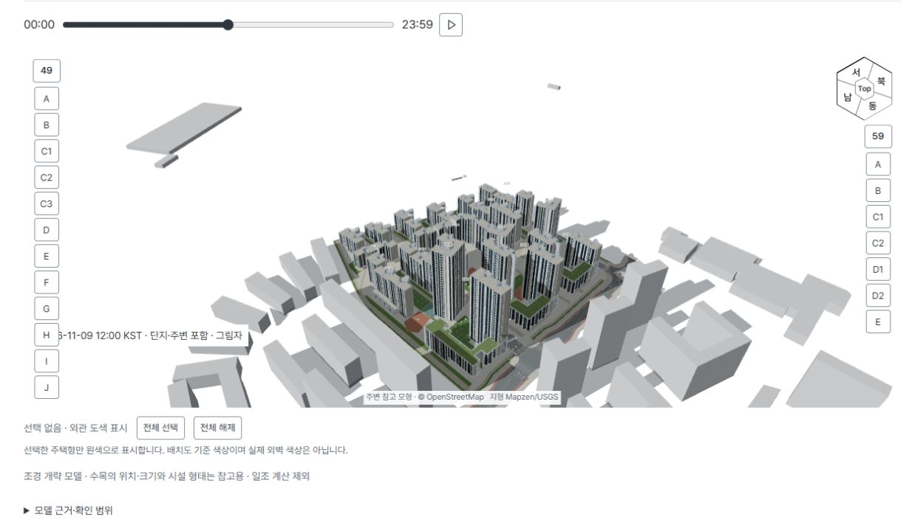
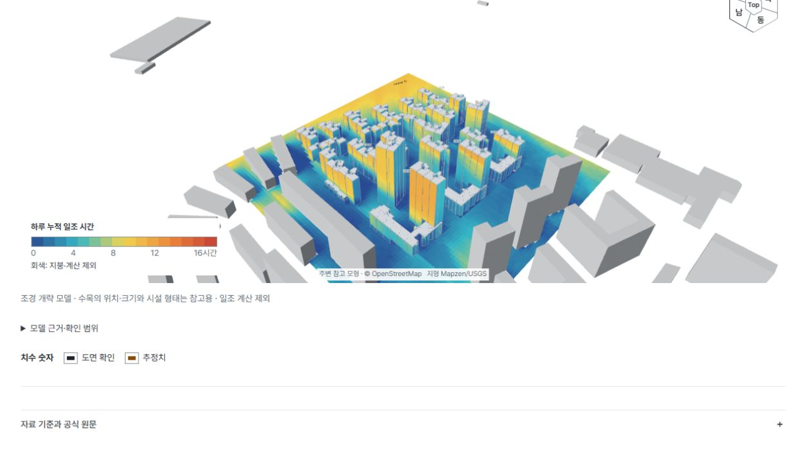
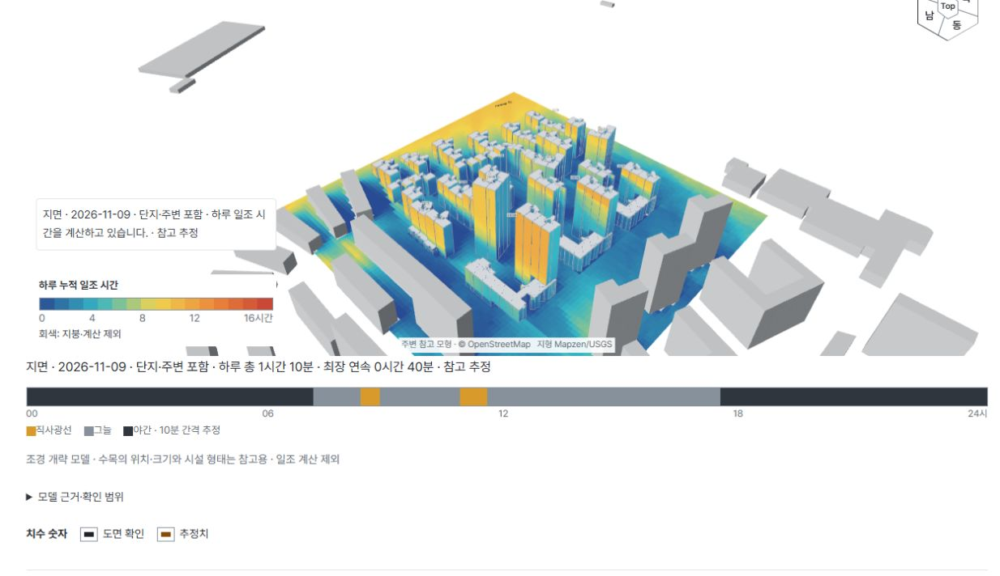
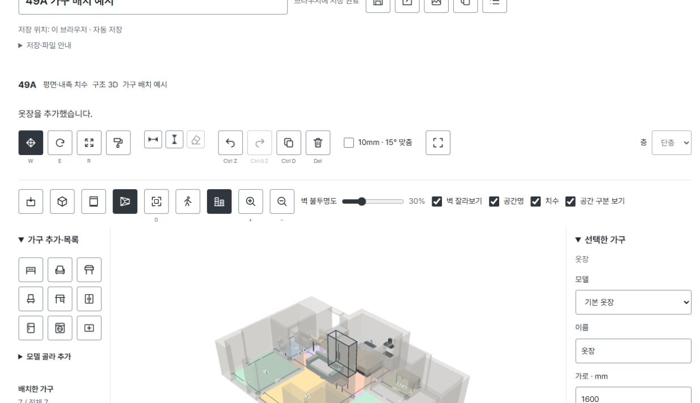
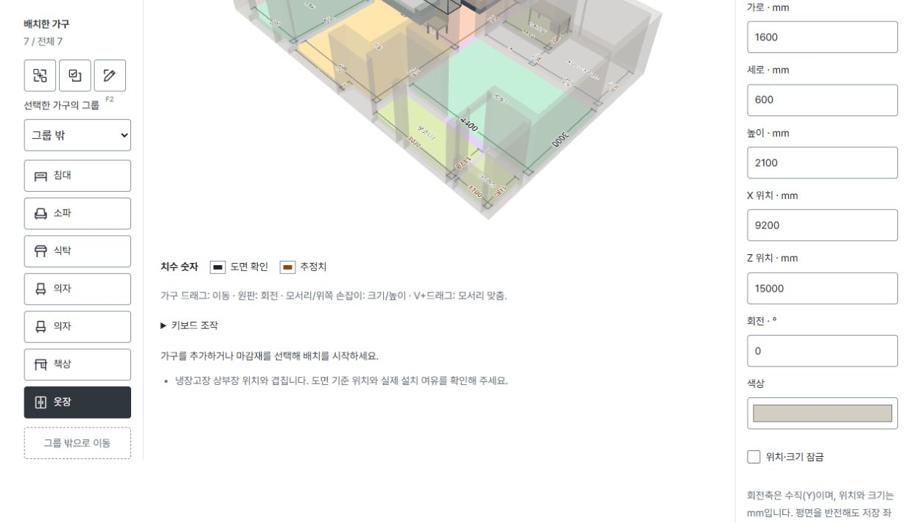
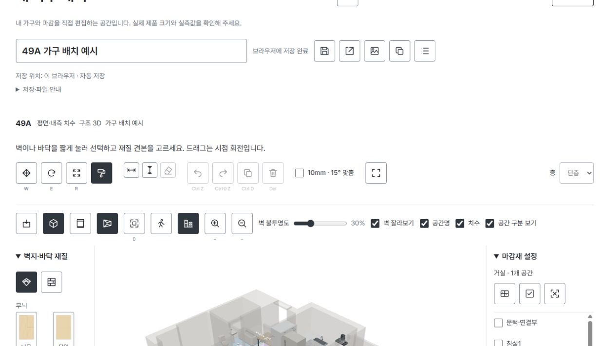
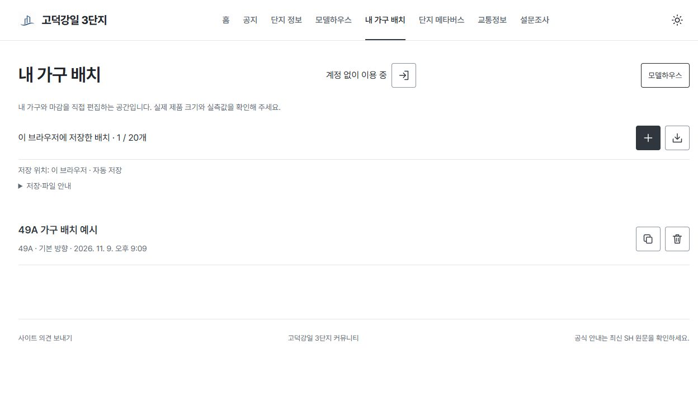
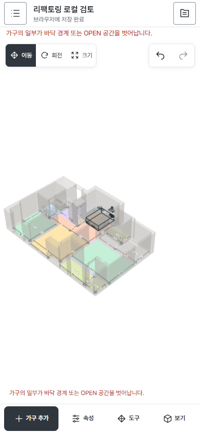

17개 동과 주변 맥락
전체 1,305세대를 인스턴스로 배치하고, 주변 도로·건물·공원·한강·B1/B2와 램프를 함께 볼 수 있게 했습니다.
17 buildings · 1,305 homes · 25 unit types · self-hosted
공고문과 도면을 읽는 데서 끝내지 않고, 단지 전체를 걸어 보고 내 집에 가구를 놓아 보는 서비스로 만들었습니다. 자료 정리, 3D 모델 파이프라인, 브라우저 기능, 서버와 NAS 운영을 직접 맡았습니다.

입주예정자 커뮤니티가 만든 참고 서비스입니다. SH 공식 사이트·공식 견본주택·준공 BIM이 아니며, 단지 규모 1,305세대는 서비스 이용자 수를 뜻하지 않습니다.
분양가, 확장비, 면적, 일정, 공지와 269개 FAQ를 원문 링크·확인 수준과 함께 정리했습니다. 같은 타입 정보가 도면, 3D 뷰어, 모델하우스와 가구 배치에서 다시 쓰이도록 카탈로그를 맞췄습니다.

전체 1,305세대를 인스턴스로 배치하고, 주변 도로·건물·공원·한강·B1/B2와 램프를 함께 볼 수 있게 했습니다.

동·층·호수를 고르면 해당 위치의 세대 내부를 불러옵니다. 외관, 층 단면, 세대 상세 사이를 옮겨도 선택과 카메라가 유지됩니다.
날짜와 시간을 바꾸면 단지와 주변 건물의 그림자가 바로 달라집니다. 하루 누적 히트맵으로 외벽·지면의 직사광선 시간을 비교하고, 원하는 지점을 찍으면 10분 단위 시간표와 최장 연속 시간을 확인할 수 있습니다.

날짜를 고르고 00:00~23:59 슬라이더를 움직이거나 재생하면 해의 위치에 맞춰 그림자가 변합니다. 주변 건물 포함 여부도 바꿔 비교합니다.

같은 날짜를 10분 간격으로 계산해 외벽과 지면을 0~16시간 색상으로 표시합니다. 파랑은 짧고 노랑·빨강으로 갈수록 오래 직사광선을 받은 표면입니다.

모델의 한 지점을 고르면 하루 총 직사광선, 최장 연속 시간과 00~24시의 일조·그늘·야간 구간을 함께 표시합니다.
NOAA/Meeus 계산으로 한국 표준시의 태양 고도·방위각을 구하고 Three.js 조명과 그림자에 연결했습니다.
외벽 약 3m·지면 약 4m 간격의 표본을 10분 단위로 계산합니다. Worker에서 처리해 계산 중에도 화면을 움직일 수 있습니다.
17개 동과 주변 건물·상가 외형의 차폐를 함께 켤 수 있습니다. 일부 주변 높이와 위치에는 공개자료 기반 가정이 포함됩니다.
입주 전 비교용 참고 계산입니다. 법정 일조, 실내 채광, 날씨, 수목·지형, 복사량·발전량은 판정하지 않습니다.

키보드·터치 입력, 충돌, 램프 높이, 미니맵을 맞춰 PC와 모바일에서 걷기와 드론 탐색을 지원합니다.

회전·확대·공간 전환과 1인칭 조작을 모바일 입력에 맞췄습니다.
AI와 작업자가 정리한 구조화 JSON을 Pydantic과 기하 규칙으로 검사하고, 층별 2D 화면에서 다시 확인한 뒤 GLB와 보고서를 만듭니다. 생성기가 도면을 자동으로 읽거나 DWG를 변환한다고 과장하지 않았습니다.
공간, 벽, 문·창, 설비, 계단과 내측 치수를 타입별로 정리합니다.
누락·교차·바닥 형상을 검사하고 층별 2D 화면에서 원도면과 대조합니다.
사각형 조합 바닥과 개구부를 메시로 만들고 한글 텍스처를 GLB에 넣습니다.
같은 모델을 도면 뷰어, 단지 인스턴스, 모델하우스와 배치 도구에서 사용합니다.


각 타입에 가족형과 2인형 생활 배치를 준비하고 집 전체, 공간별 시점, 1인칭과 저녁 조명을 제공합니다.
타입과 좌우 방향을 골라 문서를 만들고, 실제 가구 크기를 입력해 배치한 뒤 마감과 동선을 확인합니다. 비회원 작업은 현재 브라우저에 자동 저장되고, 로그인 문서는 비공개로 계정에 보관되어 다른 기기에서도 이어서 편집할 수 있습니다.

가구를 목록에서 추가하고 3D 평면에서 옮기거나 회전합니다. 위·입체 보기, 벽 투명도, 공간명과 치수를 같은 화면에서 바꿉니다.

선택한 가구의 가로·세로·높이와 X·Z 위치를 mm로 고칩니다. 바닥 밖·OPEN·계단·고정 설비·다른 가구와의 충돌은 바로 경고합니다.

공간별 바닥과 벽을 선택해 무늬, 색상, 결 방향을 바꿉니다. 현재 층이나 집 전체로 선택 범위를 한 번에 넓힐 수 있습니다.

게스트 배치는 브라우저에 자동 저장합니다. 목록에서 다시 열거나 복사하고, JSON 파일로 가져와 다른 기기에서 작업을 이어갈 수 있습니다.

좁은 화면에서는 가구·속성·도구·보기 패널을 나눠 3D 영역을 확보했습니다. 터치로 시점을 움직이고 선택한 도구만 펼쳐 씁니다.
49A부터 59I 복층까지 타입과 좌우 방향을 골라 만듭니다. 게스트는 브라우저, 로그인 사용자는 비공개 계정 문서로 저장합니다.
이동·회전·크기와 직접 치수, 10mm·15° 맞춤, 다중 선택·그룹·복제·잠금, 실행 취소와 재실행을 지원합니다.
배치 가능 영역과 가구 충돌을 검사하고 공간별 바닥, 층별 또는 집 전체 벽 마감을 바꿉니다.
1인칭으로 동선을 확인하고 JSON 가져오기·내보내기와 PNG 저장을 제공합니다. 통신 장애·재로그인·문서 충돌 뒤 복구도 다룹니다.

닉네임으로 광장에 들어와 아바타 위치와 채팅을 WebSocket으로 공유합니다. 밤비는 FAQ 태그 안내, 요니는 동·층·호수 이동을 돕습니다. 생성형 AI 챗봇이 아닙니다.
화면의 닉네임과 대화는 실제 주민 대화가 아닌 합성 검수 데이터입니다.

실제 차도와 보도 위에 차량·보행 경로를 놓고 차단기, 합류, 상충, 잔여 대기를 Web Worker에서 계산합니다. B0 기준, O1 사전등록, G1 차단기 후퇴, G2 입차 분리, G3 보행 접근 정리를 같은 수요로 10회·30회 비교할 수 있습니다.
설계자료를 바탕으로 만든 설명용 가정 실험입니다. 실제 정체·신호·사고 확률·안전 등급을 판정하지 않습니다.

분양가·확장비, 전환보증금, 토지임대료와 대출이자, 기타 월 지출을 한 화면에서 바꿔 봅니다. 개인 자격이나 대출 심사의 최종 판정은 아닙니다.
MapLibre/OpenFreeMap 위에 도로 소통, CCTV 목록과 공식 보기, 즐겨찾기와 공유를 붙였습니다. 기관마다 다른 API를 서버 어댑터와 공유 캐시, 월 쿼터 원장으로 관리하고 자료 시각과 출처를 화면에 남깁니다.
아래 수치는 2026-11-09 20:10 KST 기준 읽기 전용 집계입니다. 서로 기간과 단위가 달라 전환율이나 주민 침투율로 계산하지 않았습니다.
10/26~11/09 browser-days. 페이지뷰·누적 고유 방문자·사람 수가 아닙니다.
11/03~11/09 browser-days.
11/04 09:10 KST 이후 이벤트.
기존 문서 열기를 포함한 이벤트이며 새 배치 수가 아닙니다.
자동·로컬 저장을 포함한 revision 증가 이벤트. 배치안 개수가 아닙니다.
계측 시작 이후 내보내기 이벤트.
비운영 24계정의 현재 보관 문서. 로컬 전용·삭제본과 과거 누계 제외.
최근 30일 태그별 일일 브라우저 중복 제외 합계. FAQ 조회수는 아닙니다.
독립 사용 빈도 이벤트가 없어 0이나 추정치로 바꾸지 않았습니다.
공식 정보부터 단지 3D, 모델하우스와 생활 도구까지 실제 화면을 따라갑니다.
2026-11-06까지 저장된 대화에서 기능 사용 맥락이 확인되는 익명 메시지 8건을 골랐습니다. 대화 참여자라는 점만 확인했으며 입주민·당첨자 신분과 공개 인용 동의는 확인되지 않았습니다. 전체 만족도나 고유 이용자 수로 합산하지 않았습니다.
3D 둘러보기 · 10/28“만들어주신 3D 둘러보기가 사이버 견본주택보다 훨씬 좋아요.”
FAQ · 10/28“사이트 QA 너무 좋은거같아요!! 공홈보다 잘 되어있네요”
모델하우스 · 10/30“모델하우스 첨 보고있는데 대박이네요..”
가구 배치 · 10/30“저 지금 안방 가구 배치 끝냈습니다!! … 이걸로 해 보니 조금 두근두근해졌어요!!!”
3D 뷰어 추천 · 11/04“이 사이트 가보셔서 ‘단지정보→3D뷰어’ 들어가신 다음 대략적으로 유추 해보셔요~”
드론 모드 · 11/05“드론모드 잘 사용했습니다 ㅋㅋ”
정보 공유 · 11/05“좋은 사이트도 만들어주셔서 … 벌써 정들어서 큰일났네 싶은 생각이 듭니다.”
3D 이동 · 11/05“점프도 되고 창문에서 뷰도 볼 수 있고 … 기능이 너무 많아요 최고”
클라이언트 기능만 만든 것이 아니라 세션·CSRF·개인 데이터 경계, 비동기 작업과 GPU 자원 수명, 재현 빌드, 선택 배포, DB 백업과 실제 복원까지 운영 기준을 함께 다뤘습니다.
공통 렌더러와 카탈로그를 여러 공개 화면에서 사용합니다.
공개 자료, 계정 저장, 권한과 운영 데이터를 한 서버에서 구분합니다.
광장 동기화와 계산 작업을 UI 렌더링에서 분리했습니다.
봉인된 빌드, 해시 검증, 직렬 배포와 백업 복구 절차를 운영합니다.